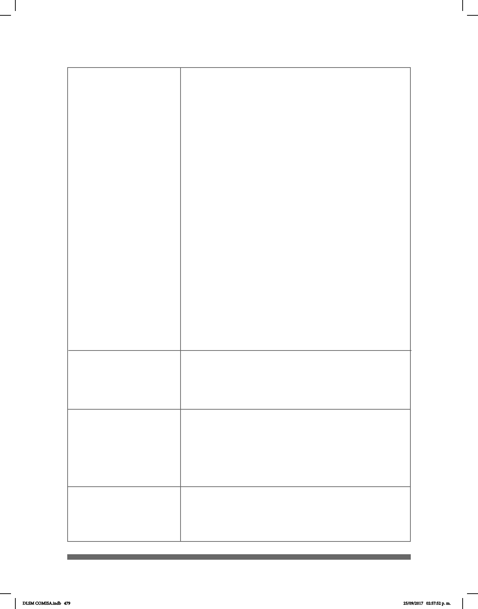

479
Artículo 12. - La Secretaría de Educación Pública promoverá
el derecho a la educación de las personas con discapacidad. Para
tales efectos, realizará las siguientes acciones:
V. Establecer que los programas educativos que se transmi-
ten por televisión pública o privada, nacional o local, incluyan
tecnologías para texto, audiodescripciones, estenografía proyecta-
da o intérpretes de Lengua de Señas Mexicana;
VI. Proporcionar a los estudiantes con discapacidad
materiales y ayudas técnicas que apoyen su rendimiento académico,
procurando equipar los planteles y centros educativos con libros
en braille, materiales didácticos, apoyo de intérpretes de lengua
de señas mexicana o especialistas en sistema braille, equipos
computarizados con tecnología para personas ciegas y todos
aquellos apoyos que se identiquen como necesarios para brindar
una educación con calidad;
VII. Incluir la enseñanza del Sistema de Escritura Braille y de
Señas Mexicana en la educación pública y privada,
fomentando la producción y distribución de libros de texto gratuitos
en Sistema de Escritura Braille, macrotipos y textos audibles que
complementen los conocimientos de los alumnos con discapacidad;
IX. Diseñar e implementar programas de formación y
certicación de intérpretes, estenógrafos del español y demás
personal especializado en la difusión y uso conjunto del español y
de Señas Mexicana;
X. Impulsar toda forma de comunicación escrita que facilite al
sordo hablante, al sordo señante o semilingüe, el desarrollo y
uso de la lengua en forma escrita;
XI. Impulsar programas de investigación, preservación y
desarrollo de Señas Mexicana, de las personas con
discapacidad auditiva y de las formas de comunicación de las
personas con discapacidad visual;
Capítulo III
Educación
La Lengua de Señas Mexicana, es reconocida ocialmente
como una lengua nacional y forma parte del patrimonio lingüístico
con que cuenta la nación mexicana. Serán reconocidos el Sistema
Braille, los modos, medios y formatos de comunicación accesibles
que elijan las personas con discapacidad.
Capítulo IV
Accesibilidad y Vivienda
Artículo 17. Para asegurar la accesibilidad en la infraestructura
básica, equipamiento o entorno urbano y los espacios públicos, se
contemplarán entre otros, los siguientes lineamientos:
II. Que incluya el uso de señalización, facilidades
arquitectónicas, tecnologías, información, sistema braille, lengua
de señas mexicana, ayudas técnicas, perros guía o animal de
servicio y otros apoyos.
Artículo 14
Capítulo V
Transporte Público
y Comunicaciones
Artículo 20. Los medios de comunicación implementarán el uso
de tecnología y, en su caso, de intérpretes de Señas Mexicana, que
permitan a la comunidad de sordos las facilidades de comunicación
y el acceso al contenido de su programación.
DLSM COMISA.indb 479 25/09/2017 02:57:52 p. m.